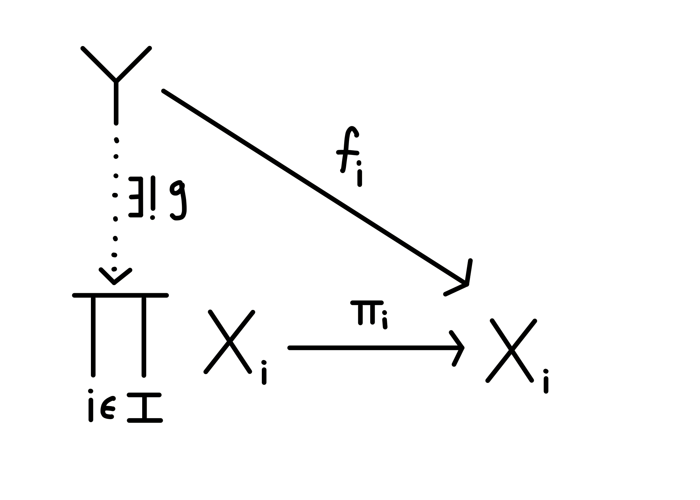
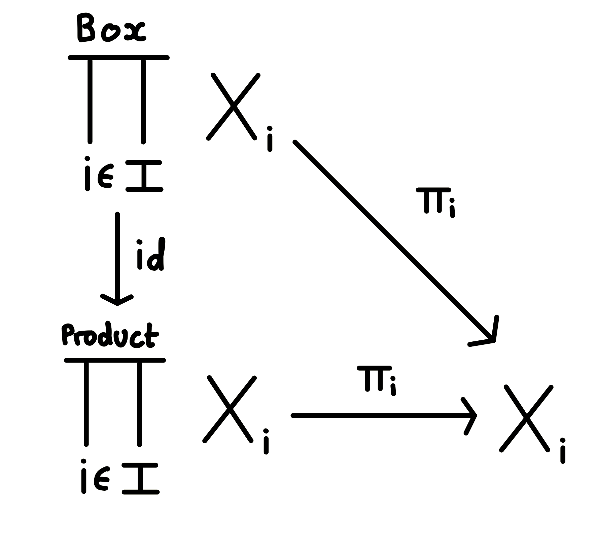
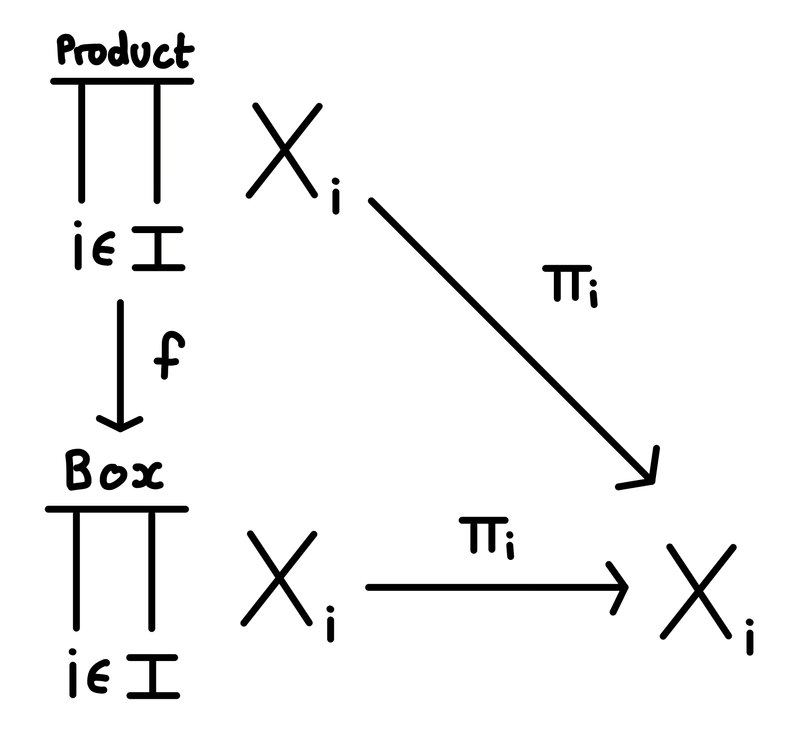

The product topology and a taste of category theory
Probably the most poorly understood idea after a first course in point-set topology is the definition of the product topology on an infinite product. For finite products, the definition of the product topology is unsurprising, and probably seems like the only sensible thing to define. For spaces $X$ and $Y$, the product topology on $X \times Y$ is the one generated by the basis $$ \mathscr{B} = \set{U \times V \mid U \subseteq X, V \subseteq Y \text{ open}}$$ which is exactly what you might expect. In particular, you can show that this is the coarsest topology on $X \times Y$ which makes both projection maps continuous. That is, any other topology which makes both projection maps continuous has this one contained in it as a subset.
Things begin to go awry for an infinite product. For an indexed family of spaces $X_i$ for $i \in \mathcal{I}$, the product topology on the space $\prod_{i \in \mathcal{i}} X_i$ is defined to be the one generated by the basis $$ \mathscr{B} = \set{\prod_{i \in \mathcal{I}} U_i \mid U_i \subseteq X_i \text{ open, with all but finitely many } U_i = X_i }$$ This all seems fine, apart from the condition that all but finitely many of the $U_i$ must be equal to the whole space $X_i$. This seems very arbitrary, and you may want to know why we can’t just define the topology to be the one with basis $$ \mathscr{B} = \set{\prod_{i \in \mathcal{I}} U_i \mid U_i \subseteq X_i \text{ open}}$$ and be done with it. This topology gets called the box topology on $\prod_{i \in \mathcal{I}} X_i$, and it contains the product topology as a subset, and is in most cases strictly finer than the product topology. For instance, if we take each $X_i$ to be a copy of $\mathbb{R}$ with the usual topology for $i \in \mathbb{N}$, then the set $$(0,1) \times (0, 1) \times (0, 1) \times \cdots$$ is open with the box topology, but not with the product topology. So why is this a bad thing. To say why, we need to introduce a small amount of category theory. Informally, a category consists of a collection of objects, like groups, rings, vector spaces, or topological spaces, and morphisms between them, like group homomorphisms, ring homomorphisms, linear transformations and continuous maps. The morphisms are the structure-preserving maps between the objects. In category theory, we make definitions that only rely on the maps between objects, not on whatever is inside the objects themselves. Using this framework, we would like to make a wishlist of properties that we want the product space $\prod_{i \in \mathcal{I} } X_i$ to have. Most importantly, for each space $X_i$, we want the projection map $\pi_i$ onto $X_i$ to be continuous.
But this does not uniquely define the product topology on $\prod_{i \in \mathcal{I}} X_I$, since both the box and product topologies satisfy this property. What we need here is the idea of a universal property from category theory. If $\prod_{i \in \mathcal{I}} X_i$ is the product space with projection maps $\pi_i \colon \prod_{i \in \mathcal{I}} X_i \to X $, then for any other space $Y$ such that, for each $i \in \mathcal{I}$, there exists a continuous map $f_i \colon Y \to X_i$, we want there to be a unique continuous map $g \colon Y \to \prod_{i \in \mathcal{I}} X_i$ such that $f_i = \pi_i \circ g$.

The above diagram is said to commute, when $f_i = \pi_i \circ g$. That is, we can factor every map from $Y$ into $X_i$ uniquely through the product space $\prod_{i \in \mathcal{I}}X_i$. For instance, with the box and product topologies on $\prod_{i \in \mathcal{I}}X_i$, the identity map makes the following diagram commute

since every open set in the product topology is also open in the box topology. However, this does not work the other way around, since not every open set in the box topology is open in the product topology. To make things concrete, once again take each $X_i$ to be a copy of $\mathbb{R}$ with the usual topology for $i \in \mathbb{N}$. We want to find a map that makes the following diagram commute

To make the maps agree as functions, we must have $f$ as the identity map on the underlying set $\prod_{i \in \mathcal{I}} X_i$. But this map is not continuous, since the preimage of the open set $$(0,1) \times (0, 1) \times (0, 1) \times \cdots$$ is itself, which is not an open set in the product topology, so we have been ripped away from the category of topological spaces. This shows that the box topology does not have the universal property of product. It can be shown that the product topology does indeed have the universal property of product, since it is the coarsest possible topology that makes the projection maps continuous.
An even more concrete way of showing that the box topology doesn't make any sense is to once again look at our example of countably many copies of $\mathbb{R}$. We define the map $$\tau \colon X_1 \to \prod_{i \in \mathcal{I}} X_i$$ by $\tau(x) = (x, x, x, \dots)$. That is, $\tau$ is the diagonal map into $\prod_{i \in \mathcal{I}} X_i$. Its composition with the projection map $\pi_1$ is just the identity map on $X_1$, so $\tau$ is a very nicely behaved function. However, I claim that $\tau$ is not continuous in the box topology. Consider the set $$I = \prod_{n = 1}^\infty \left(-\frac{1}{n}, \frac{1}{n} \right) \subseteq \prod_{i \in \mathcal{I}} X_i.$$ $I$ is open in the box topology, but not in the product topology. The preimage of $I$ is $\tau^{-1} (I) = \set{0}$, which is not open in $\mathbb{R}$ with the usual topology, so $\tau$ is indeed not continuous in the box topology. This is clearly nonsense. You can check as an exercise that with the product topology, $\tau$ is actually a continuous function.